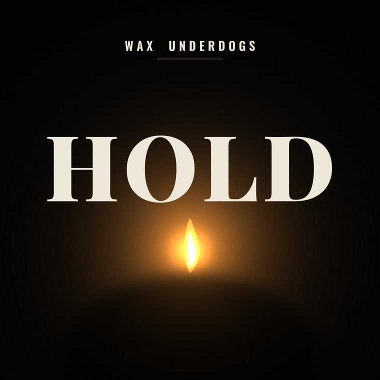

How records are made here
I write the lyrics and the underlying music — the chord progression and the structure — and I record that before the session. Suno renders the rest.
It is disclosed on every platform, in the credits and in the copy. I got it wrong on the first release and corrected it in public.
— Christian Berry